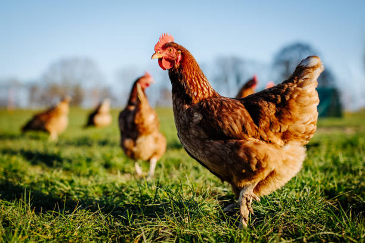
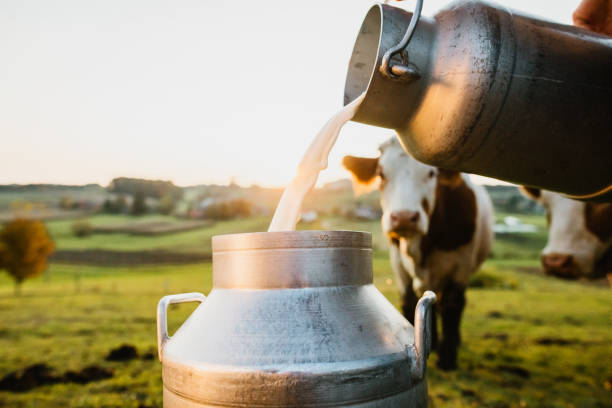
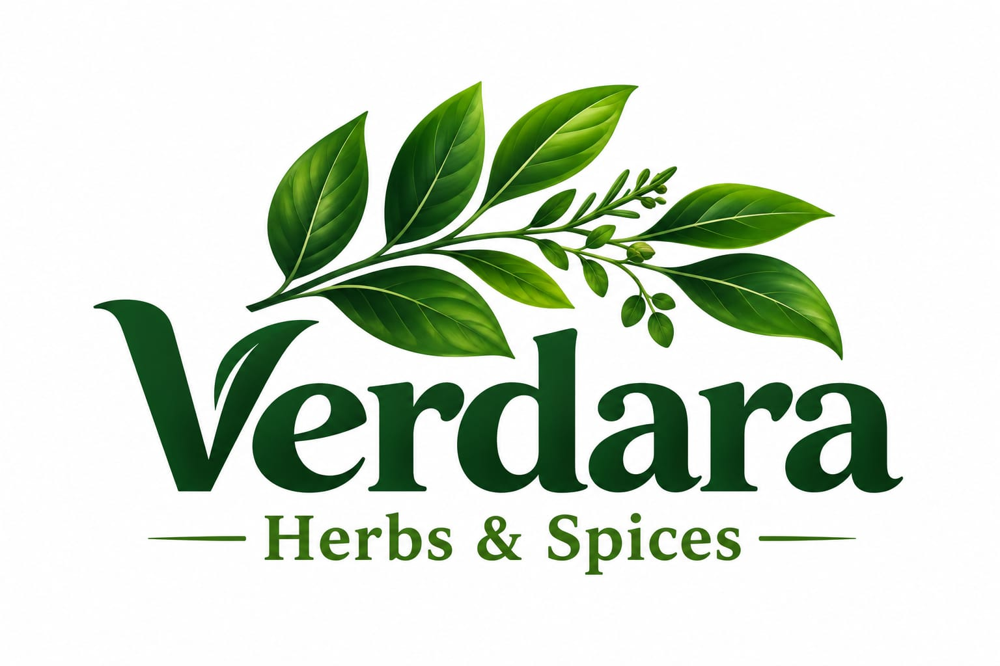
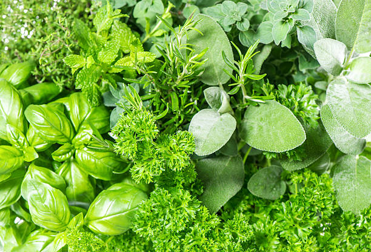
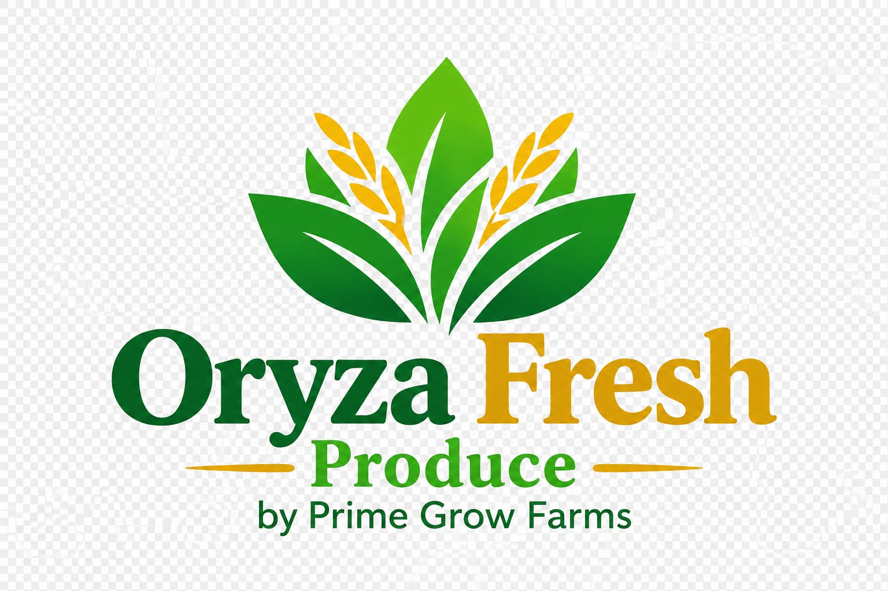
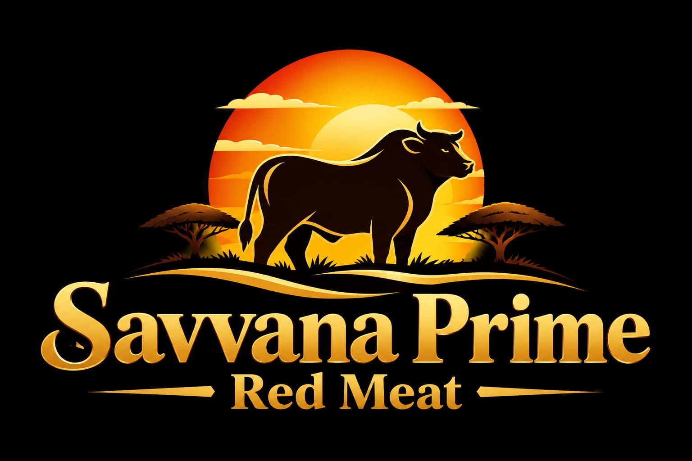
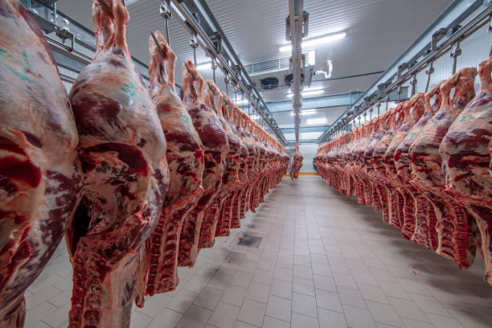
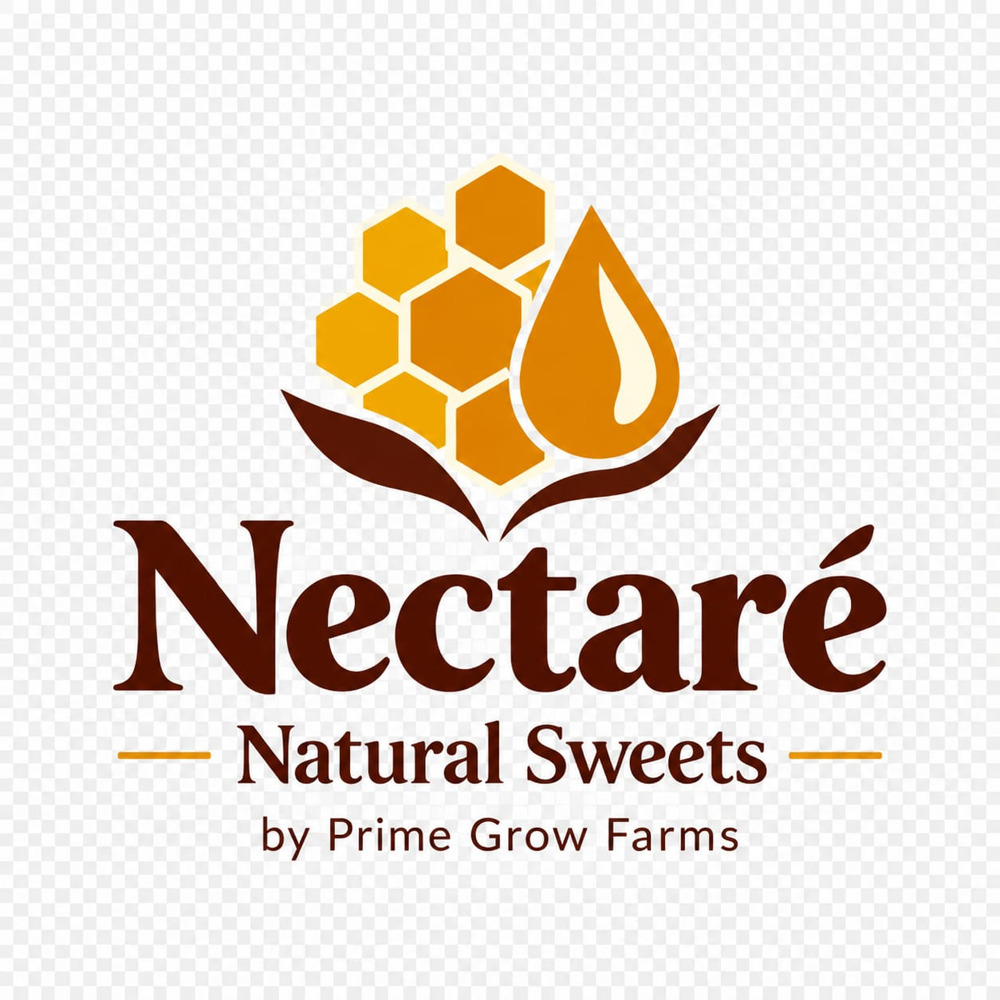
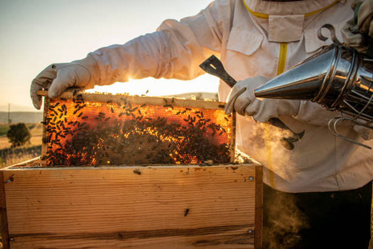

Rooted in Kenya. Growing for the Future.
Prime Grow Farms Ltd
We Grow You Glow
We are a modern agribusiness focused on crop production, livestock farming, value addition, and innovative food systems. We connect farmers, businesses, and consumers to quality food while creating opportunities for growth.

About Us
Learn more about Prime Grow Farms and our mission.
Prime Grow Farms Ltd is a growing agribusiness in Kenya, dedicated to sustainable farming practices and innovative food systems. Our mission is to provide high-quality agricultural products, while supporting local communities and promoting environmental stewardship.
We are investing in crop production, livestock farming, and value addition, ensuring that our products meet the highest standards of quality and safety. Our team of experts works tirelessly to implement modern farming techniques and technologies that enhance productivity and efficiency.

Our Mission
To cultivate a sustainable and innovative agricultural ecosystem that connects farmers, businesses, and consumers, while promoting growth and prosperity for all stakeholders.
Our Vision
To be a leading agribusiness in Kenya, recognized for our commitment to quality, sustainability, and community development.
Our Brands
Discover the diverse range of brands under Prime Grow Farms.

Aqua Prime
Aqua Prime is a brand dedicated to providing high-quality aquatic products, including fresh fish and seafood, sourced sustainably to ensure the best taste and nutrition.


Avi Prime
Avi Prime is a brand dedicated to offering premium poultry products, including fresh eggs and chicken, raised in humane conditions and processed to maintain the highest standards of quality.


Lacto Prime
Lacto Prime is a brand dedicated to providing high-quality dairy products, including fresh milk, cheese, and yogurt, made from locally sourced ingredients.


Verdara
Verdara is a brand dedicated to offering a wide range of fresh herbs and spices, grown using sustainable farming practices to enhance flavor and nutrition.


Oryza Fresh
Oryza Fresh is a brand dedicated to providing high-quality fresh vegetables and grain products,sourced from sustainable farms to ensure the best taste and nutritional value.


Savanna Prime
Savanna Prime is dedicated to providing fresh red meat products, including beef and lamb, sourced from ethically raised livestock and processed to maintain the highest standards of quality and safety.


Nectare'
Nectare' is a brand dedicated to offering a variety of fresh and organically sourced natural sweets and confectioneries, crafted to delight the taste buds while promoting health and wellness.

Our Solutions
Explore the innovative solutions we offer to enhance agricultural productivity and sustainability.
Fixed Cold Rooms
Maximize your crop value and eliminate post-harvest loss with our commercial-grade, fixed cold storage facilities. Built for cooperatives, large-scale farmers, and exporters, our centralized cold rooms use advanced atmospheric controls to keep produce at peak freshness. Safely store bulk harvests during peak supply seasons, allowing you to bypass low market prices and sell when demand and profitability is highest.
Mobile Storage [Chilled & Dry]
Bring the warehouse directly to your farm gate. Our fleet of plug-and-play mobile storage units can be deployed anywhere to match your seasonal harvest timeline. Choose Mobile Cold Units to immediately halt spoilage of fresh fruits and vegetables at the source, or select our Mobile Dry Units for secure, pest-free, and moisture-controlled storage of grains, pulses, and tubers. No permanent foundation required just instant, flexible storage when and where you need it.
Agro-Processing & Value Addition
Stop selling raw commodities for minimum returns. Our state-of-the-art value addition facilities help you wash, grade, slice, dehydrate, or package your harvest into premium, market-ready goods. By converting perishable crops into high-margin products—like dried fruits, flours, purées, and retail-packaged produce—we extend your product shelf-life from days to months and open doors to lucrative supermarkets and export channels.
Pay As You Store [Saas] Storage
Affordable, eco-friendly storage without the massive overhead. Our decentralized storage pods run entirely on solar energy with thermal battery backups, ensuring zero reliance on an unstable power grid. Through our flexible Pay-As-You-Store model, smallholder farmers and traders can rent storage space down to a single crate or kilogram. Pay only for what you use, and benefit from zero-emission preservation.
Digital Escrow Logistics
Build absolute trust with global buyers. Every batch of produce entering our ecosystem is tagged with an IoT-enabled digital identity. We track temperature variations, origin details, and handling timelines in real-time. This provides buyers with verifiable proof of a continuous, unbroken cold chain and sustainable handling, paving the way for faster customs clearances, automated digital payouts, and premium export pricing.
Equipment-as-a Servives [EaaS]
Access industrial-grade farming infrastructure without the heavy capital investment. Through our Equipment-as-a-Service platform, farmers can rent specialized machinery—from precision harvesters and optical sorting scales to heavy-duty crates and mobile power packs—on a daily or seasonal basis. We handle the maintenance and logistics; you simply book online, boost your operational efficiency, and return it when finished.
Partnerships
We collaborate with various stakeholders to create a sustainable agricultural ecosystem.
Farmer Cooperatives
We work closely with farmer cooperatives to provide training, resources, and market access, empowering local farmers to increase productivity and profitability.
Research Institutions
Our partnerships with research institutions enable us to implement cutting-edge agricultural practices and technologies, ensuring continuous improvement in our operations.
Government Agencies
We collaborate with government agencies to align our initiatives with national agricultural policies and contribute to the development of the sector.
Private Sector
By partnering with private sector companies, we enhance our value chain, improve distribution networks, and expand market reach for our products.
Careers
Join our team and be part of a growing agribusiness that values innovation, sustainability, and community development.
Current Openings
We are always looking for talented individuals to join our team. Check our current job openings and apply to be part of Prime Grow Farms.


Contact Us
Get in touch with us for inquiries, partnerships, or feedback.